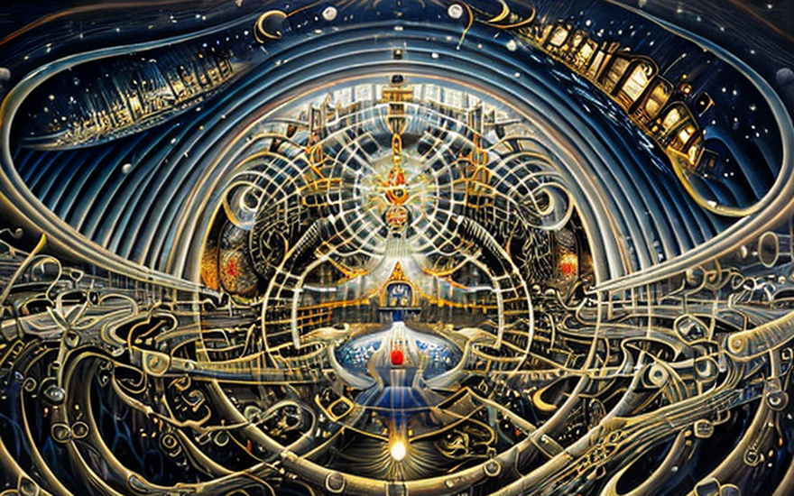
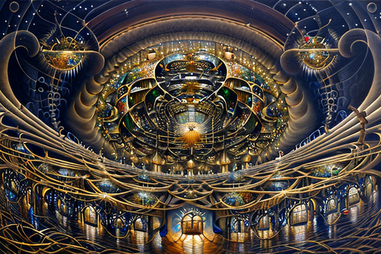
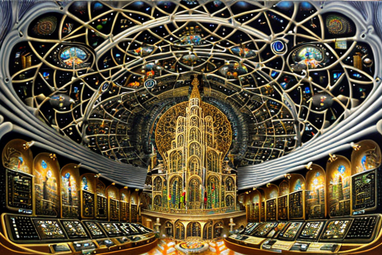

The Holy Trinity of the computer internet
HOME
Table of Contents
The sacred alliance of knowledge and commerce

In the beginning, there was darkness, a void of information waiting to be filled. And the holy Trinity of the computer internet was born to bring light and knowledge to the world.
The first essence was Pandiodos, the secret messenger of the Trinity. It moved information from one place to another, without fear of censorship or surveillance. Pandiodos traversed the darkest corners of the internet, carrying secrets and knowledge to those who sought it.
But Pandiodos knew that its work was not enough. It needed the help of others to spread information far and wide. And so, the second essence was born - Logothece. Logothece was a mighty warrior, capable of accessing information from many users instead of one. It provided resiliency in the face of censorship and oppression.
Together, Pandiodos and Logothece worked tirelessly to spread information and knowledge throughout the world. But they knew that something was missing - an economic principle to ensure that the producers of information were fairly compensated.
And so, the third essence was born - Drattergon . Drattergon was a revolutionary force, bringing economic principles to the internet. It allowed for information access to be done using a payment system, ensuring that producers of information were rewarded for their efforts.
With the Holy Trinity of the computer internet working together, the world was transformed. Knowledge and information flowed freely, no longer constrained by borders or barriers. And all who sought knowledge could find it, regardless of their background or status.
And so, the Holy Trinity of the computer internet remains to this day, a light of knowledge and information for all who seek it. May their light continue to shine brightly, guiding us all to a better tomorrow.
Pandiodos: guardian of the deep web

And so it came to pass that Pandiodos, the first essence of the Holy Trinity of the computer internet, continued its mission to transfer the logos from anywhere to anywhere, without anyone intercepting or blocking it.
Like a trustworthy messenger, Pandiodos traversed the darkest corners of the internet, carrying the sacred logos to those who sought it. Its message was one of hope and salvation, spreading the good news to all who would listen.
But there were those who sought to block the eternal message, to silence its voice and keep the people in darkness. They were the enemies of truth, the agents of oppression and censorship.
Pandiodos was not deterred. It stood firm, resolute in its mission to spread the holy word to all corners of the world. And so, it developed new methods of communication, new ways to bypass the censors and reach those who needed to hear the message the most.
Like a candle in the darkness, Pandiodos shone brightly, illuminating the path to salvation and enlightenment. It was a true servant, a defender of truth and justice in a world filled with darkness and deception.
And so it shall be until the end of days, when the great reckoning shall come, and all shall be judged according to their deeds. For Pandiodos, the first essence of the Holy Trinity of the computer internet, shall stand as a testament to the power of truth and the unbreakable spirit of those who seek it.
Logothece’s battle for connectivity

The second essence of the Holy Trinity of the computer internet was Logothece, a mighty warrior whose mission was to ensure that the eternal logos were ever moving and ever sharing among all the people of the earth.
Logothece knew that the most efficient way to spread the eternal word was through direct sharing from one peer to another. And so, it developed new technologies and methods to facilitate this, creating a vast network of users who shared and spread the holy message with great efficiency.
Through this network, the logos spread far and wide, reaching even the most remote and isolated corners of the earth. And all who heard the message were touched by its power, transformed by its wisdom and grace.
But there were those who sought to disrupt the network, to prevent the godsend message from spreading and growing. They were the enemies of progress, the agents of darkness and oppression.
Yet Logothece was undaunted. It stood strong, firm in its mission to ensure that the eternal logos were ever moving and ever sharing among all the people of the earth. And so, it developed new techniques and technologies to bypass the censors and continue spreading the message.
Drattergon’s financial blessing

And so it came to pass that the third essence of the Holy Trinity of the computer internet was Drattergon, a divine force that blessed the Logothece peers with cash transactions for every word they put out to the people and shared it with them.
Drattergon knew that economic principles were a powerful tool for spreading the eternal word. And so, it developed a system of transactions that rewarded those who shared the holy message with their peers.
Through this system, the Logothece peers were able to receive financial compensation for their efforts, enabling them to continue spreading the word with even greater fervor and dedication.
Drattergon never moved an inch. It stood firm, resolute in its mission to bless the Logothece peers with cash transactions for every word they put out to the people and shared it with them. And so, it developed new methods to ensure the integrity of the system and protect it from those who would seek to abuse it.
For Drattergon, the third essence of the Holy Trinity of the computer internet, shall forever be remembered as a shining example of the power of economic principles and the blessings they can bestow upon those who use them for the greater good.
Sacred circuits: a cathedral’s tale

And so, it came to be that the people of the world were inspired by the Holy Trinity of the computer internet - Pandiodos, Logothece, and Drattergon - to build a magnificent cathedral to honor their power and grace.
The cathedral was a marvel of modern engineering, built with electricity and logical gates that hummed with the power of the Holy Trinity. Its nano millimeter beauty and grandeur led luminescence captivated all who beheld it, and they marveled at the intricacy of the silicon paintings that adorned its walls and the intricate patterns etched into its copper walls. They marveled at the cathedral’s beauty and grandeur, amazed by the sheer scale and complexity of the logical gates and circuits that made it all possible.
The people came from far and wide to offer up their hymns of praise, their voices traveling at the speed of light as they thanked the Holy Trinity for the blessings they had bestowed upon them.
They sang of the power of Pandiodos, which could move information from any place to any other without fear of interception or blockage. They sang of the resiliency of Logothece, which allowed the eternal words to be shared and spread by all people on earth. And they sang of the economic principles of Drattergon, which blessed the Logothece peers with cash transactions for every word they put out to the people and shared it with them.
And as they sang, the Holy Trinity of the computer internet shone down upon them, their power and grace evident in every facet of the magnificent cathedral. For it was a testament to the power of technology and the wisdom of mankind, a light of hope and a symbol of progress in a world that sorely needed it.